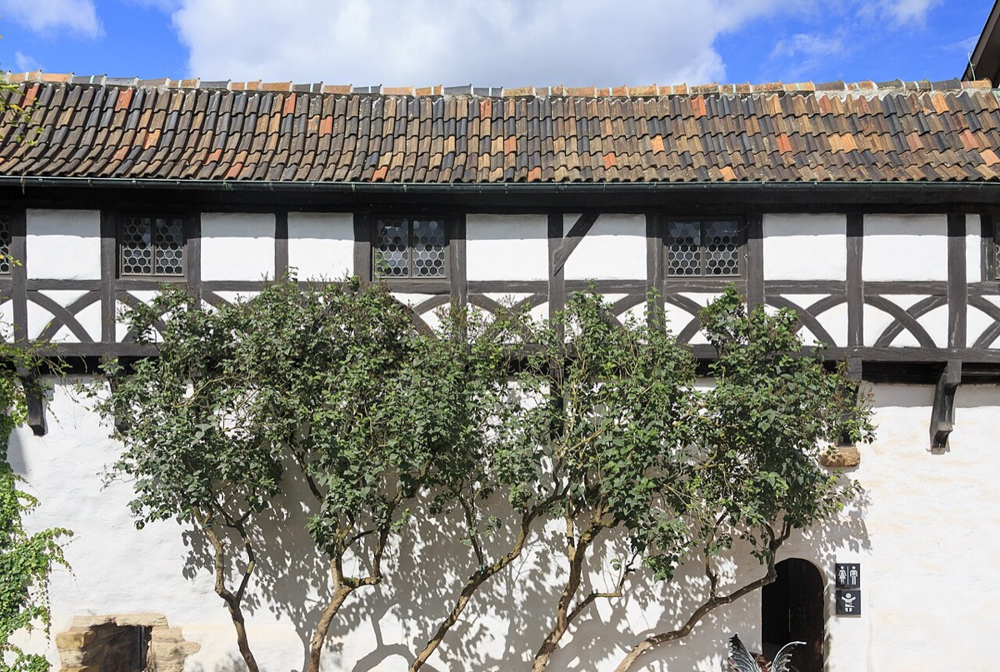

Eisenach: born into the guild

Johann Sebastian Bach was born on 21 March 1685 into a family for whom music was not a calling but a trade — inherited, taught, and guarded like any craft. In Thuringia the name "Bach" was so tied to the profession that town musicians were sometimes called "the Bachs" whether or not they were related. His father, Johann Ambrosius Bach, was Eisenach's town musician — director of the Stadtpfeifer, the civic wind-and-string band that played tower fanfares, weddings, civic ceremonies — and a court trumpeter besides. The boy's first classroom was the family workshop: strings and brass by day, the family's vast network of organist and cantor relatives all around.
Two shadows loomed over the town, both formative. The first was the Wartburg, the castle on the hill where Martin Luther — hiding under a false name — had translated the New Testament into German. Eisenach was saturated in Luther: Bach attended the same Latin school Luther had attended, sang in the same choir tradition, and absorbed a Lutheranism in which music was next to theology itself (Luther's own formulation). The second was the most gifted musician the family had yet produced: cousin Johann Christoph Bach, organist of the Georgenkirche where Sebastian was baptized — a composer of startling chromatic depth whom Sebastian later called "profound," and living proof at the font that a Bach could be more than a craftsman.
Then childhood ended, twice. His mother, Elisabeth, died in May 1694, when he was nine. His father remarried in November — and was dead by February 1695. Within nine months the boy had lost both parents. The Eisenach household dissolved, and ten-year-old Sebastian was sent thirty miles away to a brother he barely knew.
Biographers resist psychologizing, but Gardiner puts the unavoidable point plainly: everything in the documentary record of the adult Bach — the bristling self-reliance, the readiness to fight authority, the ferocious industry, and perhaps the lifelong preoccupation in his texted music with death as consolation rather than terror — belongs to a man who was an orphan before he was ten.
Study anchor: this era's cards are context, not works — but the Bach clan and Luther's town cards explain two forces (family craft-culture, Lutheran theology of music) that stand behind every piece on this timeline.